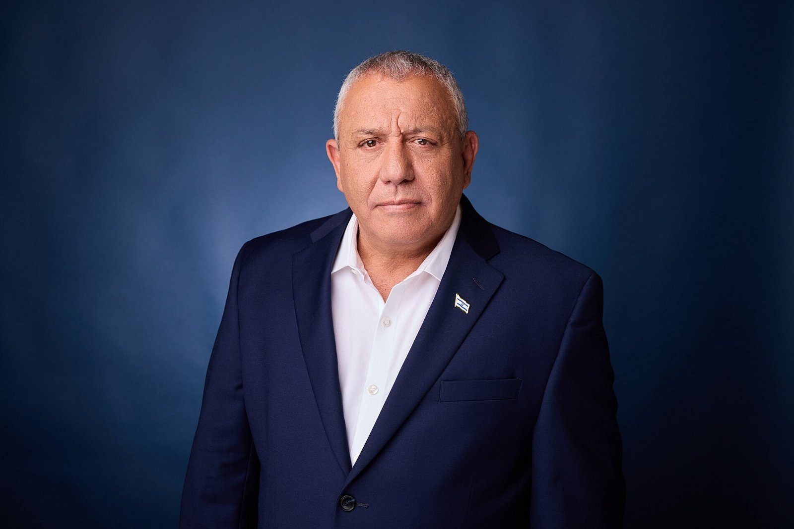

In 3 punti · Mondo
Israele: Eisenkot a un passo dal governo. Con chi e a quale prezzo
Firmati gli accordi con Lieberman e con i Democratici, Bennett tratta ancora. Per arrivare a 61 servono gli ultraortodossi e l'appoggio dei partiti arabi. L'obiettivo è giurare il 2 dicembre.

Israele potrebbe avere già la prossima settimana il primo governo senza Benjamin Netanyahu dal 2022. Gadi Eisenkot, incaricato dal presidente Isaac Herzog, ha chiuso i primi accordi di coalizione e cerca gli ultimi voti. Dieci giorni fa avevamo descritto le tre strade possibili: ecco quale sta prendendo.
1Il Parlamento è già cambiato
Il 17 novembre Matan Kahana, del partito di Eisenkot Yashar, è stato eletto presidente della Knesset con 66 voti, al posto di Amir Ohana del Likud. Sono stati decisivi anche i voti dei partiti arabi. Il candidato del Likud, Ofir Katz, era sostenuto dagli ultraortodossi di Shas e Giudaismo unito della Torah.
2Gli accordi firmati
- Yisrael Beiteinu. Il partito di Avigdor Lieberman ha firmato un accordo con Yashar. Secondo Channel 12, citato dall'Ansa, avrebbe i ministeri della Difesa e dell'Immigrazione. Lieberman promette «un governo a maggioranza ebraica», non un governo di minoranza.
- Democratici. Il 26 novembre il partito di Yair Golan ha annunciato l'accordo: quattro ministeri, tra cui una Sicurezza nazionale «ampliata», Lavoro e welfare, Comunicazioni, Cultura e sport, e l'impegno a cancellare la riforma della giustizia del governo Netanyahu.
- B'Yachad. Naftali Bennett tratta ancora. Dice che il suo partito «in nessun caso» passerà nel blocco di Netanyahu, ma preferirebbe un governo di unità che includa il Likud e considera l'appoggio di ultraortodossi e partiti arabi un'alternativa peggiore, senza escluderla. Secondo Walla ha rinviato a domenica l'incontro con Eisenkot, chiedendo prima un piano dettagliato sulla leva. Eisenkot conta di firmare «presto» anche con lui.
3Il prezzo della maggioranza
I quattro partiti del blocco hanno 48 seggi su 120: ne servono 61. La strada che si sta delineando passa per gli ultraortodossi di Giudaismo unito della Torah e per l'appoggio esterno dei partiti arabi.
- La leva. Secondo il Times of Israel, Yashar e Giudaismo unito della Torah discutono in modo informale un quadro sulla leva militare che di fatto manterrebbe ampie esenzioni per gli studenti delle scuole religiose. A metà novembre Eisenkot e Lieberman si erano detti contrari a un impegno scritto in questo senso. Il 26 novembre, secondo la stampa israeliana, i rabbini della fazione Degel HaTorah hanno dato il via libera ai colloqui ufficiali. Secondo la tv pubblica Kan, la bozza di intesa eliminerebbe le quote di arruolamento per gli ultraortodossi, rafforzerebbe i controlli su chi chiede l'esenzione per studio e creerebbe nuovi percorsi di servizio.
- I partiti arabi. Il leader di Ra'am Mansour Abbas prevede che il suo partito sosterrà il governo. Il leader della Lista comune Yousef Jabareen promette di fare «tutto il possibile» per tenere fuori dal potere Netanyahu e Itamar Ben Gvir, e chiede misure contro la criminalità e le demolizioni di case.
Dall'altra parte
Il Likud continua a trattare per un governo di unità nazionale. Shas, l'altro partito ultraortodosso, sceso da 11 a 6 seggi, resta con Netanyahu, anche se secondo Channel 13 alcuni suoi rabbini guardano con favore a un governo Eisenkot. Il leader Aryeh Deri ha detto che se i rabbini lo costringessero a sostenerlo «sarà molto difficile per me restare in politica». Il ministro uscente Itamar Ben Gvir, dell'estrema destra, ha commentato: «I terroristi festeggiano, gli ebrei piangono». Intanto, nel processo per corruzione a Netanyahu, secondo il Times of Israel i giudici hanno suggerito alla procura di ritirare le accuse del caso 4000, riconsiderare il caso 2000 e cercare un accordo sul caso 1000.
I tempi
Eisenkot vorrebbe chiudere gli accordi entro il fine settimana e far giurare il governo già mercoledì 2 dicembre, riducendo i ministeri da 31 a 24 o meno. L'incarico scade il 6 dicembre e può essere prorogato al massimo fino al 20. Se fallisce, la decisione torna a Herzog.
La domanda di ParrhesIA: laici, ultraortodossi e partiti arabi: un governo così può durare?
Fonti
- Times of Israel, 26 novembre 2026: Eisenkot edges closer to government as his party announces coalition deal with Democrats
- Times of Israel, liveblog del 26 novembre 2026
- Times of Israel, 26 novembre 2026: UTJ rabbis said to give go-ahead to official talks with Eisenkot
- Times of Israel, 27 novembre 2026: Eisenkot hopes to get his government sworn in next week
- LaPresse, 27 novembre 2026: Eisenkot, accordo con il partito di Bennett presto
- Ansa, 25 novembre 2026: il Change Bloc punta a un nuovo governo mercoledì prossimo
- Open, 25 novembre 2026: Israele verso un nuovo governo senza Netanyahu
- Ynet, 17 novembre 2026: Matan Kahana elected Knesset speaker with 66 votes
- Al Jazeera, 17 novembre 2026: Israel parliament elects Gadi Eisenkot ally Matan Kahana as new speaker
- Times of Israel, 15 novembre 2026: Yashar, Likud hold unity talks
Questo articolo è stato scritto con l'intelligenza artificiale e verificato sulle fonti indicate. Hai trovato un errore? Segnalalo sui nostri social: le correzioni vengono pubblicate qui con la data della modifica.